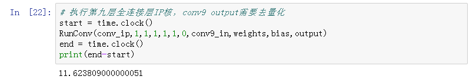
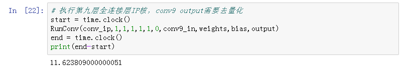
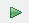
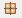

实验步骤
1. 运行Tiny YOLOv2
在浏览器中访问10.249.12.21:<port>，以“xilinx”作为密码登陆。
上传实验包的yolo_app.zip，并在上传完成后解压。
然后在Jupyter中打开yolo_app文件夹中的Tiny_YOLOv2.ipynb，点击菜单栏中的Cell->Run All，如图2-1所示。
运行需要耗费一定的时间，请同学们耐心等待。
运行结束后，查看第5层卷积层和第9层全连接层的运行时间，分别是104.19s和11.62s，如图2-2所示。
 
对输入图片dog.jpg进行目标检测，最终检测到狗、自行车和小汽车的概率分别是0.810、0.508和0.796，如图2-3所示。
2. 编写量化算法
本实验的必做题要求同学们使用INT8线性对称量化方法，对Tiny YOLOv2神经网络的第5层（卷积层）和第9层（全连接层）进行量化即可。
Tiny YOLOv2的神经网络共9层。在本实验中，每一层的输出特征图都已经以.txt的格式保存好，可以直接使用。
打开Tiny_YOLOv2_Quant.ipynb，找到下面的Cell，可以看到第5层的输入特征图和权值都被导入成变量，如图2-4所示。
请参照实验原理-3.2量化方法简介的量化方法，编写Tiny YOLOv2第5层和第9层的输入特征图和网络权值的量化代码，如图2-5所示。
类似地，编写第9层全连接层的输入特征图和网络权值的量化代码。
3. 修改卷积IP核
实验包的yolo_hls/conv_core目录提供了卷积IP核，但该IP核接受的输入特征图和权值都是FP32格式的，而在本实验中，特征图和权值都已经被量化成INT8格式。因此，需要修改卷积IP核，使其支持INT8数据的卷积运算。
首先在Vivado HLS工具中打开实验包yolo_hls\conv_core目录的卷积IP核工程。观察卷积函数的函数签名变化，如图2-6所示。
小提示 
由图2-6可知，特征图输入端口feature_in和网络权值输入端口W的数据类型均被更改为INT8的数据类型；此外还新增了参数qmax，用于表示feature_in和W的区间端点的MAX值，用于计算输出特征图的缩放因子Δ_o从而实现输出特征图的去量化。
请根据conv.cpp中的代码注释提示，补全qmax总线接口信号定义，并完成量化和反量化相关的代码。
代码编写完成后，对修改后的卷积IP核进行仿真，确认代码功能正确后，点击工具栏的按钮进行综合，最后点击工具栏的按钮生成新的卷积IP核。
看过来 
IP核代码修改后，必须相应地修改TestBench，等CSim通过后才可进行后续的步骤。
4. 更新Block Design
实验包中的yolo_vivado目录中提供了已经构建好Block Design电路图的Vivado模板工程。同学们需要 将池化IP核与量化后的卷积IP核更新 到模板工程的Block Design电路图中，并生成比特流。
更新时，先将实验包中的池化IP核、量化后的卷积IP核添加到Vivado的IP库中，如图2-7所示。
双击打开design_1.bd，Vivado将提示需要更新IP核。此时，按照提示点击“Report IP Status”。在随后弹出的IP Status窗口中，点击“Upgrade Selected”按钮。随后将弹出更新完毕的提示对话框和“Generate Output Products”的对话框，分别点击“OK”按钮和“Generate”按钮即可。
更新完毕后，得到如图2-8所示的电路图。

点击Vivado工具栏中的按钮以生成比特流。生成完毕后，参照实验1-实验步骤-2.4生成比特流并导出Overlay，导出Overlay。
最后，将导出的.tcl和.bit更名为yolo.tcl和yolo.bit，然后上传到Jupyter中的yolo_app目录中。
5. 上板测试
在Jupyter的yolo_app目录中，点击打开Tiny_YOLOv2_Quant.ipynb，点击Cell->Run All进行测试。
观察第5层卷积、池化IP核的运行时间，以及第9层全连接层的运行时间，如图2-9所示。


报告要求1 
对比分析量化前后的运行时间差别，将运行结果截图，写到实验报告中。
无量化的Tiny YOLOv2算法输出的图片是output.jpg，量化后的Tiny YOLOv2算法输出的图片是output_quant.jpg。
报告要求2
对比量化前后的输出图片，分析量化前后的差异，并将截图和分析写入实验报告中。
6. 优化卷积、池化IP核
参考实验包中的《DLA3.HLS设计》P52开始的“循环展开与流水线”章节，使用循环展开与流水线方法优化卷积IP核与池化IP核。优化完成后，需在HLS工程中综合并导出IP核。
报告要求3
对比分析优化前后的综合分析报告，截图及对比优化前后的差异，写入实验报告当中。
将优化后的IP核更新到Vivado的Block Design中，生成比特流并导出Overlay到PYNQ的yolo目录下。然后执行Tiny_YOLOv2_Quant.ipynb，观察第5层卷积和池化、第9层全连接的运算时间。
报告要求4&5
对比分析优化先后的运行时间差异，将运行结果截图，写入实验报告中。
把优化后的output_quant.jpg保存下来，截图并分析优化前后的差异，写入实验报告中。